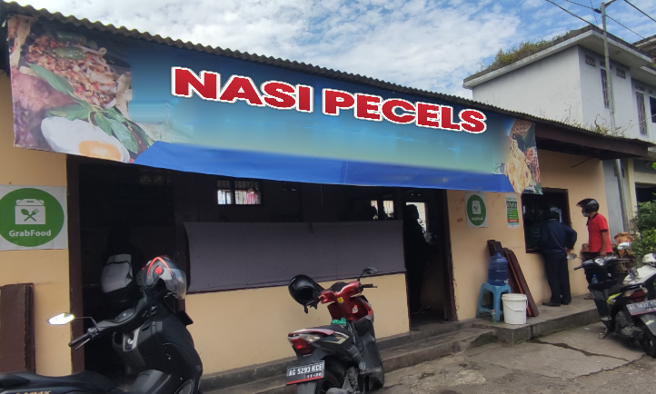

Kontak NASI PECELS
Halaman ini berisi keterangan untuk menghubungi dan mengunjungi NASI PECELS. Pelanggan dapat memakai informasi pada tabel di bawah untuk menanyakan menu, memesan makanan, atau mencari lokasi usaha.

Informasi Kontak
| Keterangan | Isi |
|---|---|
| Nama usaha | NASI PECELS |
| Pemilik atau pengelola | Ibu Sri Wahyuni |
| Alamat | Jalan Kenanga Raya Nomor 17, Kota Blitar, Jawa Timur |
| 0812-3456-7890 | |
| Media sosial | Instagram @nasipecels.blitar |
| Jam operasional | Senin sampai Sabtu, pukul 06.00 sampai 14.00 WIB (hari Minggu libur) |
| Tautan peta | https://maps.google.com/?q=NASI+PECELS+Blitar |
Informasi Pemesanan
Pemesanan dapat dilakukan dengan datang langsung ke alamat usaha atau menghubungi nomor WhatsApp yang tercantum pada tabel di atas. Layanan bungkus tersedia untuk dibawa pulang, dan layanan antar tersedia untuk wilayah Kota Blitar dengan ongkos kirim yang menyesuaikan jarak. Pelanggan sebaiknya memeriksa jam operasional sebelum datang agar tidak berkunjung ketika usaha tutup.
Panduan Pemesanan
Agar pesanan cepat diproses, sebutkan menu yang diinginkan, jumlah porsi, pilihan lauk, dan jenis minuman beserta penyajiannya, panas atau dingin. Jika memesan lewat WhatsApp, tuliskan juga nama pemesan dan waktu pengambilan. Pelanggan yang tidak tahan pedas sebaiknya menanyakan tingkat kepedasan sambal sebelum memesan, karena pecel Blitar dikenal dengan sambal yang pedas.
Tata Cara Menghubungi
Hubungi usaha pada jam operasional. Mulailah pesan dengan salam dan identitas diri, lalu sampaikan keperluan dengan kalimat yang jelas. Kirim satu pesan yang lengkap daripada banyak pesan pendek, supaya pengelola tidak kehilangan konteks. Jika pesan belum dibalas, tunggu beberapa waktu sebelum mengirim pesan lanjutan.
Etika Berkomunikasi dengan Pelanggan
Pengelola dan pelanggan sama-sama perlu menjaga sopan santun. Pengelola menjawab pertanyaan tentang menu, harga, dan ketersediaan dengan jujur dan jelas, serta mengakui bila suatu informasi belum pasti. Pelanggan menyampaikan keluhan dengan tenang dan menyebut hal yang dipermasalahkan, sehingga keluhan itu dapat ditindaklanjuti. Data pribadi pelanggan, seperti nomor telepon dan alamat, tidak boleh disebarkan tanpa izin.
Saran dan Keluhan
Pelanggan dipersilakan menyampaikan saran tentang menu, rasa, kebersihan, atau pelayanan melalui WhatsApp maupun media sosial yang tercantum pada tabel kontak. Saran yang disertai contoh kejadian akan lebih mudah dipahami dan ditindaklanjuti oleh pengelola. Pengelola berkewajiban membaca setiap masukan dengan terbuka dan menjawabnya dengan bahasa yang santun.
Bila terjadi kekeliruan pada pesanan, pelanggan sebaiknya menghubungi usaha pada hari yang sama dengan menyebutkan menu yang dipesan dan waktu pembeliannya. Informasi yang lengkap membantu pengelola memeriksa pesanan tersebut dengan cepat dan menentukan langkah perbaikan yang wajar.
Menuju Lokasi
Untuk menuju lokasi, buka tautan peta pada tabel di atas, lalu ikuti rute yang ditampilkan. Foto lokasi pada halaman ini membantu pengunjung mengenali bangunan atau lingkungan sekitar usaha. Bila alamat sulit ditemukan, pelanggan dapat menanyakan arah lewat WhatsApp sebelum berangkat.